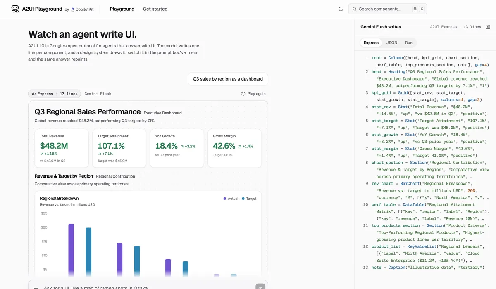
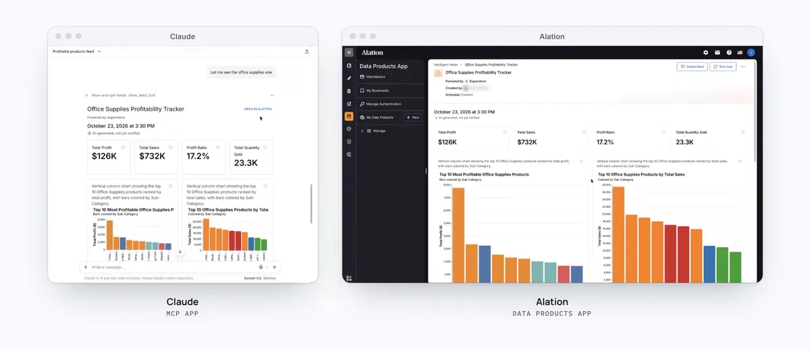

生成式 UI 定案：協定只管描述，畫面歸 App 自己畫
導讀原文：Google 發布 A2UI 1.0，生成式 UI 開放協定的首個穩定版，同篇附上 Atlassian、Alation、Bloomberg、ByteDance 與 Gemini Notebook 的採用實況——官方產品公告
A2UI 不生成畫面，只生成「要畫什麼」的描述；像素由每個 App 用自己的原生元件畫，所以同一份輸出在自家 App 或 Claude、Gemini 裡都一樣快。
原文把今天的 agent 互動比作終端機時代：能力已經很強，但幾乎所有回答都是文字。
比價三樣商品、改一份詳細計畫再核可，一整面文字都不是好介面。
A2UI 的作法是讓 agent 描述「該顯示什麼」，由 App 用自己的原生元件畫出來。
原文承諾三件事不變：延遲一樣低、信任一樣高、原生還原度一樣完整。
另一個例子是一句「把跟 Priya 的晚餐改到週五」：回來的是一張對齊行事曆、餐廳空位與叫車價格的畫面。
開發者只建一次，手機與筆電各自原生渲染。
本站重繪，非原文圖；原文以文字描述這條鏈路，未給此圖與節點順序。
描述裡沒有值：資料與子元件在伺服器端綁定，敏感值從頭到尾不進模型。
App 也只會用到你註冊的元件與你的設計系統；agent 能配置什麼，被元件庫限死。
描述的最小單位是元件而不是畫面，一份畫面因此能混用不同 App 的元件——跨 App 拼一張是設計前提，不是副作用（編輯判斷）。

原文的例子很日常：生病那天要動六個 App——掛號、改會議、通知團隊、設自動回覆、請伴侶接小孩、訂湯。
純文字 agent 回你一面編號清單，然後你來回追問「哪一個」。
A2UI 版是六個 App 收成一張畫面；改計畫是幾下點擊，按下確認前什麼都不會送出。
穩定版補的三層：協定、renderer、SDK
協定這層補了雙向函式呼叫：畫面能回頭問 agent，不再只是被動顯示結論。
同時加上無障礙支援與 extensions，後者讓協定夾帶任意額外 metadata。
生成畫面的路徑有兩條：需要設計的由 LLM 用 A2UI Express 寫，形狀固定的交給「system one」決策模型挑元件。
renderer 覆蓋六套，橫跨 web、行動與桌面；web 與 Flutter 版還能跑進 MCP Apps，A2UI 畫面就出現在 Claude、Gemini 裡。
agent SDK 新增 TypeScript 與 Dart，加上既有的 Python，負責產生 skills、轉譯訊息、修正錯誤。
推論格式可替換是省延遲的手段；Python 另有 Macros，做程式化的元件展開與資料綁定。
整合的難處通常在邊界：agent 框架要什麼、各平台 renderer 吃什麼，SDK 得兩邊都補。
| 層 | 1.0 的內容 | 原文說明／缺口 |
|---|---|---|
| 協定 | 雙向函式呼叫 | 例：航班、訂位的選擇器當場查可用性 |
| 協定 | 無障礙支援、extensions | 原文未給無障礙的準則或等級 |
| Renderer | React／Angular／Lit、Flutter、SwiftUI、Compose | Compose「目前 v0.9.1，v1.0 即將推出」 |
| MCP Apps | web 與 Flutter renderer 可放進助理 | 原文點名 Claude、Gemini |
| Agent SDK | Python、TypeScript、Dart | 產生 skills、轉譯訊息、修正錯誤；Macros 僅 Python |
三層的共同設計是可替換：換平台換 renderer、換模型換推論格式，協定不動——這也是它敢宣告 1.0 的結構理由（編輯推論）。
版本時差：協定宣告 1.0，生態仍在 0.9.x
Atlassian 把 A2UI 帶進 Jira：工作項目能指派給 agent，agent 缺細節或等決定時，直接在項目裡開卡片問。
Bloomberg 只在原文的採用名單裡出現一次，沒有說明用途。
Alation 的 AIOS 用 A2UI 生 feed：指標卡與圖表，每張圖都能顯示背後的 SQL 與資料。
ByteDance 在 2026 年 6 月為跨平台框架 Lynx 發布 renderer，預設元件建在 lynx-ui 上。
Gemini Notebook 則用卡片問「要講者版或詳細版、聚焦哪些題目」，生成前還有可改格式與風格的回顧卡。
企業也能註冊自家 agent 用 A2UI 回應，由 Gemini 的 component gallery 負責畫。
（編輯推論：這條路徑的樣式主權在 Gemini 手上，跟「只用你的設計系統」是兩套邏輯。）

但原文有給版本的三項都還不是 1.0：Gemini 0.9.1、Compose renderer 0.9.1、Lynx 0.9。前兩項是 Google 自家，Lynx 才是夥伴。
原文的案例也沒有任何量化成效，只有「已在用」與幾位主管的引述。
導入成本同樣留白：卡片誰設計、元件庫誰維護、舊版 renderer 怎麼升，三題都沒有答案。
（編輯觀點：協定穩定與生態可用之間有一段落差，這段落差才決定你該不該現在押。）
帶走三件事
畫面主權留在 App。agent 只交描述，像素與樣式由你的元件庫決定。
導入前先對版本。有公布版本的都停在 0.9.x，功能表好看不等於跑得動 1.0。
賣點是信任邊界。資料綁在伺服器、值不進模型，這是文字回覆給不了的。
同一主題的其他館藏
導讀為本站編輯內容（AI 摘解自原文與館藏重點，非官方文件）；引述規格與版本出自原文，圖解 A 為本站重繪並已標明。原文未提供任何延遲、採用率或轉換率的量化數據。內容經對照原文的獨立事實審查後發布。